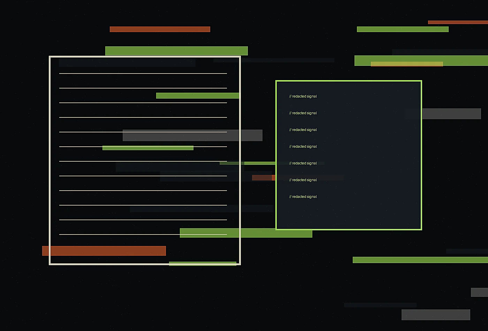

Executive Threat Narratives
We convert technical risk into precise, board-ready intelligence that keeps nuance intact and avoids alarmist theater.
Explore serviceNoir editorial cyber-intelligence bureau
Explore the service architecture behind Cipher Quill. Each offer is designed to create visible improvement, durable internal habits, and a client experience that feels intentionally made rather than borrowed.
Request a briefing
Cipher Quill offers three core services, each built to move from diagnosis to usable change. We avoid abstract strategy that cannot survive staffing, budget, weather, travel, or governance. The work is collaborative, documented, and direct enough for teams to use without translation.
Some clients need a two-week diagnostic, others need a full concept system or retained advisory during launch. We match the engagement to the decision ahead. Every format includes a clear owner, working cadence, deliverables, and criteria for success.

Recommendations are grounded in interviews, site observation, operational constraints, content review, and prototype response. Taste matters, but unsupported taste is not enough. We show the reason behind each move.
Deliverables may include journey maps, editorial guidelines, implementation checklists, service scripts, spatial notes, asset direction, measurement plans, and decision briefs. Each artifact is written for the people who will actually use it.
We work with the documents and meetings that already shape security decisions: board packets, incident rooms, tabletop summaries, advisory drafts, internal explainers, and executive notes. Rather than adding another noisy channel, we improve the language, sequence, and evidence standards of the channels leaders already read.
Our editorial lens is useful before, during, and after pressure events. Beforehand, we define formats and vocabulary. During response, we keep updates factual and proportionate. Afterward, we help teams preserve the record, explain lessons, and improve governance without turning every retrospective into blame or brand management.